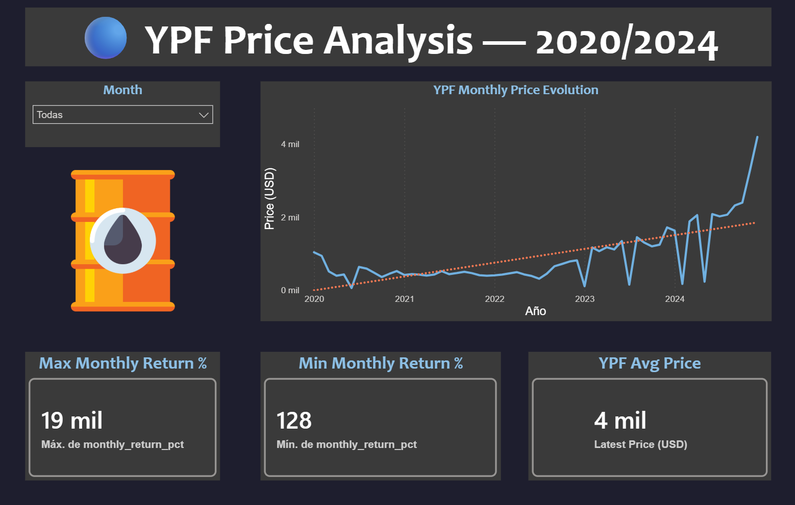
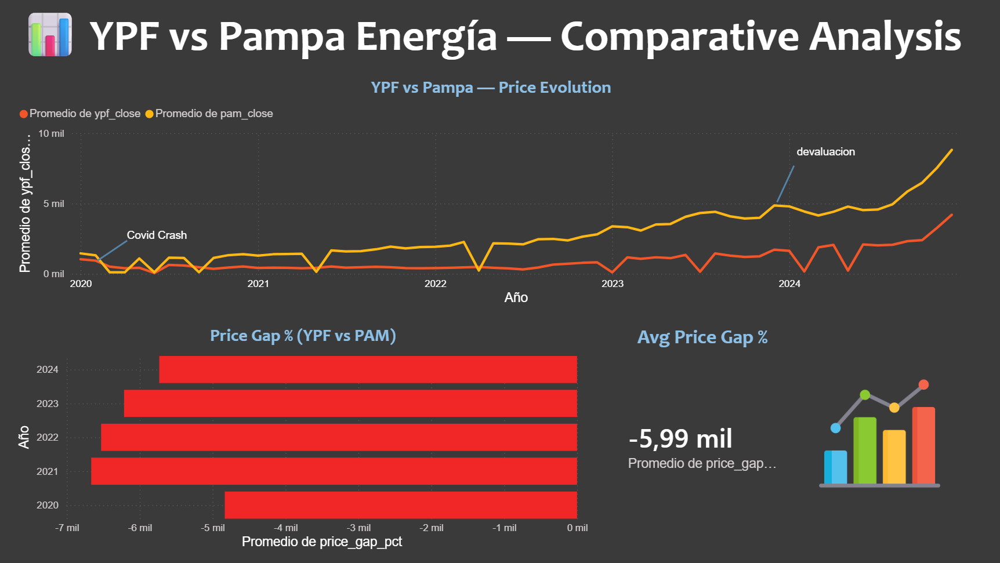
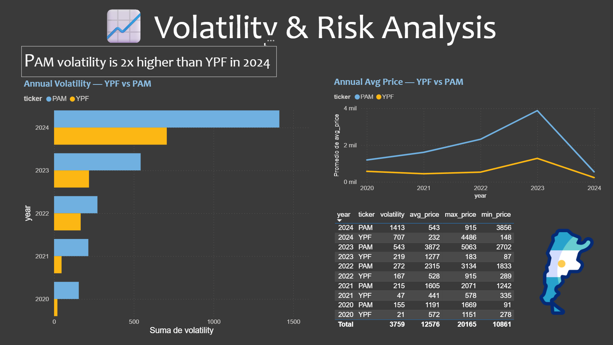
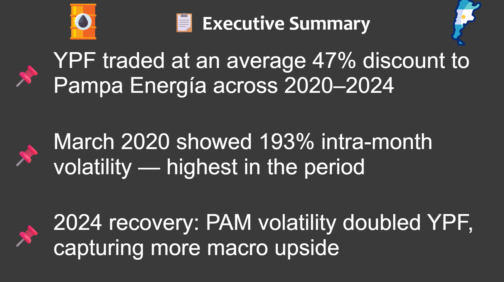
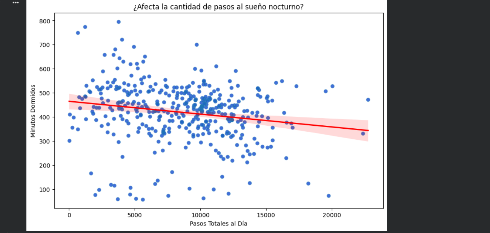
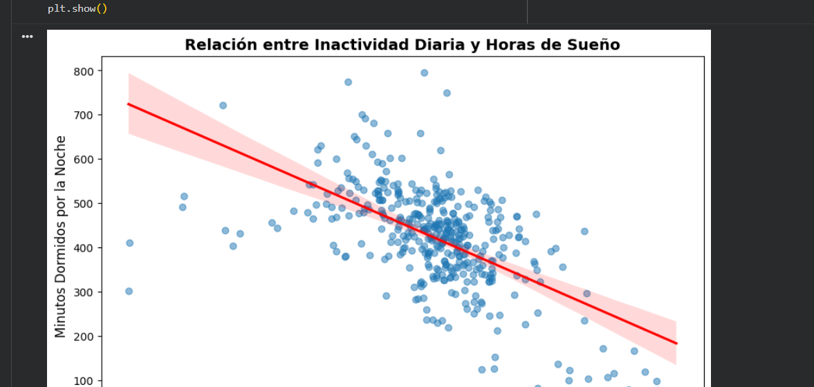
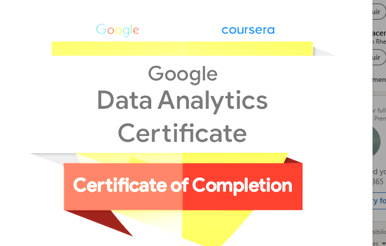

Economista y analista de datos con experiencia en Business Intelligence, SQL y dashboards financieros en el sector público. Berazategui, Buenos Aires.
KPIs monitoreados en dashboards para la Secretaría PyME
Registros auditados mensualmente con 90% de precisión
Promedio en certificación Data Analytics — CoderHouse
Materias aprobadas de la Licenciatura en Economía (UNAJ)
Sobre mí
Soy economista (Licenciatura en curso, tesis pendiente en UNAJ) con 1 año de experiencia como Analista Junior en el Ministerio de Industria y Desarrollo Productivo. Trabajo con SQL, BigQuery, Power BI y Excel avanzado para transformar datos en decisiones.
Durante mi pasantía diseñé dashboards que monitoreaban más de 20 KPIs críticos para la Secretaría PyME y automaticé reportes reduciendo significativamente los tiempos de consulta.
Actualmente finalizo mi tesis con un análisis econométrico del sector energético argentino (YPF / Pampa Energía), estudiando la correlación entre tipo de cambio, riesgo país y precios de activos.
Stack técnico
Trayectoria
Perfil orientado a resultados con base académica sólida y aplicación real en el sector público.
Índice de precisión en auditoría mensual de registros financieros
KPIs monitoreados en dashboards para la dirección estratégica
Promedio en certificación Data Analytics — CoderHouse 2024
Proyectos
Proyectos reales con datos reales. Desde análisis de mercado hasta modelos financieros.
Análisis comparativo de precios, retornos y volatilidad de YPF y Pampa Energía entre 2020 y 2024. Incluye evolución de precios mensuales, análisis de volatilidad anual, brecha de precios y un Executive Summary con conclusiones clave del período.




Conclusiones: YPF operó con un descuento promedio del 47% respecto a Pampa Energía en el período. Marzo 2020 registró la mayor volatilidad intra-mes (193%). En 2024 la volatilidad de PAM duplicó la de YPF, capturando mayor upside macroeconómico.
Análisis del comportamiento de usuarios de wearables (dataset FitBit) para identificar oportunidades de marketing para BellaBeat. Pipeline completo: limpieza y consolidación en BigQuery (SQL), análisis estadístico y visualización en Python. Proyecto final — Google Data Analytics Certificate.


Conclusiones: El sedentarismo —no los pasos— es el verdadero driver del descanso: correlación negativa fuerte (r = -0.60) entre horas sedentarias y minutos dormidos, frente a una correlación débil (r = -0.19) entre pasos y sueño.

Análisis econométrico del sector energético argentino: YPF, Pampa Energía, Central Puerto y Edenor. Evalúa cómo el riesgo país, el Merval y el precio del petróleo impactan en el precio de sus acciones. Modelos de regresión y series de tiempo.
Dashboard interactivo en Power BI que analiza tendencias del mercado global de videojuegos: géneros más vendidos, plataformas líderes y evolución histórica de ventas. Proyecto del curso CoderHouse.
Contacto
Estoy en búsqueda activa de oportunidades en finanzas, análisis de datos o control de gestión. Disponibilidad full time, presencial o híbrido en GBA / CABA.